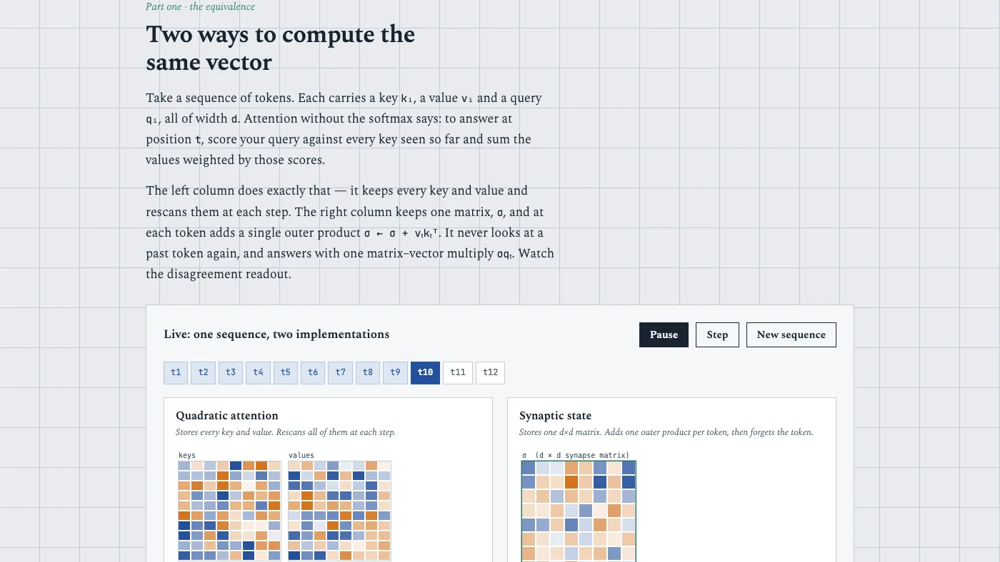
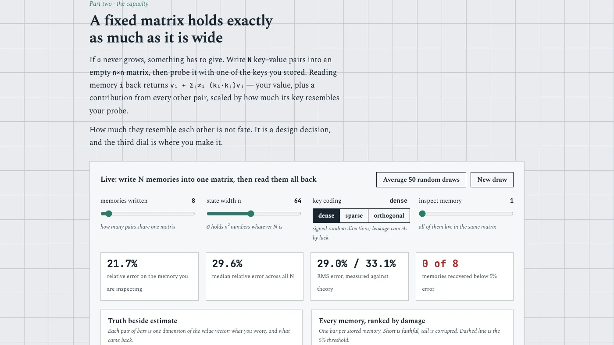
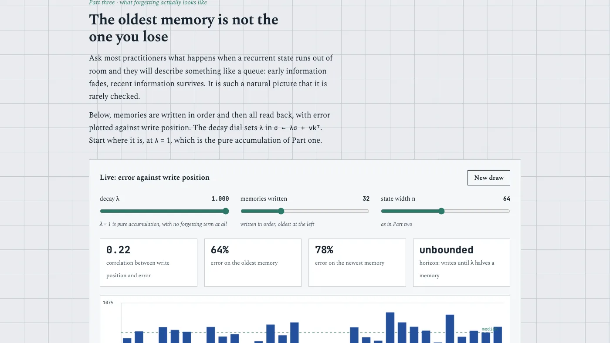
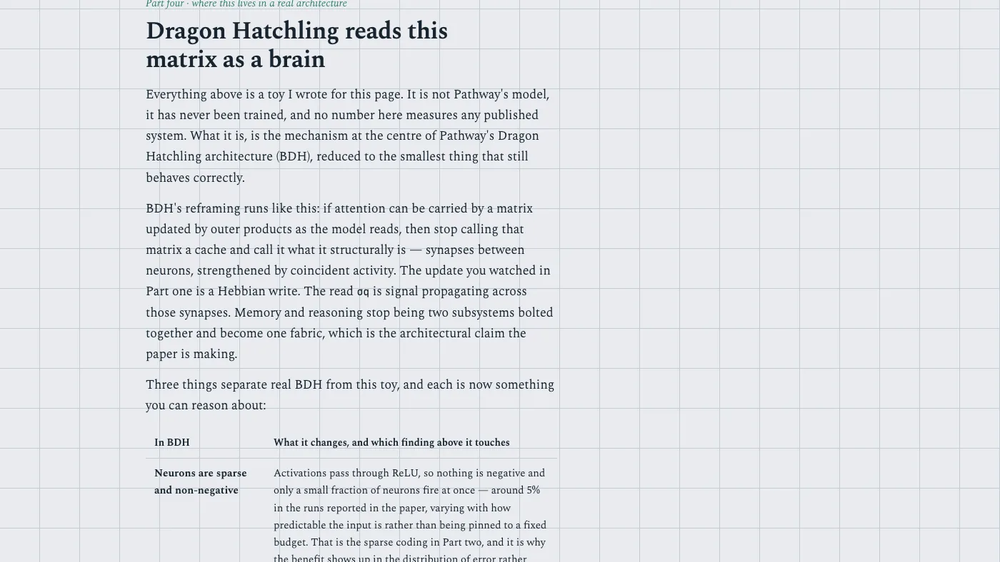

Certamus · Hackathon
DataForge 2026, Pathway track
Pathway · 19 September 2026 · Finalist, Final round
The brief below is restated in our own words. The original belongs to the organiser.
A track that does not want a demo
The brief asked for an explainer rather than a product. Pick one frontier idea in machine learning, build something a working engineer can interact with, and make the idea click. Connect it to the host's own architecture. Every claim on the page has to be defensible, and incorrect claims carry a heavy penalty rather than a deduction.
That last rule is what shaped the entry. When wrong claims cost more than thin ones, the winning move is not to claim more. It is to make every claim checkable in the time a judge is willing to give it.
The brief belongs to the organiser, so it is restated here in our own words rather than reproduced.
One claim, and a way to try to break it
The claim was that attention without its softmax can be rewritten as a single fixed-size matrix updated one outer product at a time, that the two computations agree to floating-point precision, and that the matrix then holds exactly as many associations as it is wide.
The page opens already running. There is no button to press before something happens, and the first result lands in about a minute.
The reason both columns are drawn is that the equivalence is the kind of thing people nod at and do not believe. Showing the two running side by side, on the same sequence, with a running maximum of their disagreement, is a different kind of argument from writing the identity down.

The opening panel, running before the reader touches anything. Left column keeps every key and value and rescans them at each step. Right column keeps one matrix and adds one outer product per token. The readout underneath is the worst disagreement between them, which settles at about 1e-16.
The part that is measured rather than asserted
The second panel is where the claim could actually fail, so it has the most controls on it.
Three results come out of it, and the entry was careful to say which kind of result each one is. Two of them are provable rather than discovered: capacity under orthogonal keys is exactly the width, and pure accumulation has no recency bias because a sum does not care what order it was built in. Stating them as findings would have been a claim the brief punishes. Stating them as theorems that practitioners routinely disbelieve, and then letting the reader watch them hold, is the honest version.
The third is a closed form for the error under random keys, derived rather than fitted, and the page plots the derivation against the measurement so the gap is visible rather than described.

Every dial that matters, and four readouts that recompute on each change. How many memories are written, how wide the matrix is, how the keys are coded, and which memory to inspect. Nothing here is precomputed. 
The recency result. Under pure accumulation the oldest memory is not the one you lose, which contradicts the usual mental picture of a recurrent state as a queue. Add a decay term and recency appears, which is what the gated architectures exist to do.
2 slides
The result that went against us
One finding was genuinely empirical, and it came out the wrong way.
Going in, the expectation was that sparse non-negative keys would reduce interference. They do not. At equal width the median error is essentially identical. What sparsity changes is the shape of the distribution rather than its centre: dense coding recovers almost nothing below a five per cent error threshold, sparse coding recovers a couple of memories out of eight.
The page reports that as a hypothesis the measurement refuted, in those words, rather than quietly deleting the hypothesis and keeping the part that worked.

The required section connecting the concept to the host's own architecture, which is where the sparsity result gets reframed: monosemanticity is what sparse coding buys, not a property that happens to come with it.
Saying what it does not establish
The thing an explainer is most likely to be caught on is overreach, so the entry wrote its own attack list before a judge could.
Nothing on the page is trained. The keys are random draws, which brackets the answer rather than settling it: orthogonal coding is the optimistic ceiling and independent draws the pessimistic floor, and real learned keys sit somewhere between, where published work does not pin them down. The page names that as the most important open question rather than leaving it as a gap.
The figures quoted from the host's published systems are labelled as reported rather than reproduced, and the cost result they come from is described as a cost-efficiency result on one benchmark rather than an accuracy win. The audit behind it was run by co-authors at partner institutions, which is a reproduction and not an arms-length one. Saying so costs nothing and is the difference between a summary and an assessment.
Two of the supporting papers are cited by title, authors and year rather than by identifier, because the content was verified and the identifiers were not. A wrong identifier is worse than no identifier.
What the entry was actually built on
Three files that matter, and nothing for a reader to install. The measurement code is a plain library with no DOM in it, so it runs in a terminal as easily as in the page, and the page is a consumer of it rather than a container for it. Forty-six assertions, one for each quantitative claim the page makes, run in about two seconds.
The packaging mattered more than expected. The page originally loaded its library with a script tag, which works behind a web server and fails silently when the file is opened directly from disk, with every panel dead and the console full of errors. Anyone who downloaded the single file would have seen nothing work at all. The library is now inlined into the page by a build step, a test asserts the two copies are byte-identical, and that test fails with the exact command to run when they drift.
What we would do differently
The honest limitation is the same one the page already names: none of this is trained, so it brackets the capacity question rather than answering it. A version that took even one small trained model and measured where its learned keys actually sit between the orthogonal ceiling and the random floor would move the entry from a teaching artifact to a small result.
That is a bigger piece of work than a hackathon window allows, which is the right reason to have left it out and the wrong reason to pretend it was not missing.
Who did what
- Krishna ChagtiChose the claim, wrote the measurement bench and the page, and defended every number on it. A solo entry with no mentor